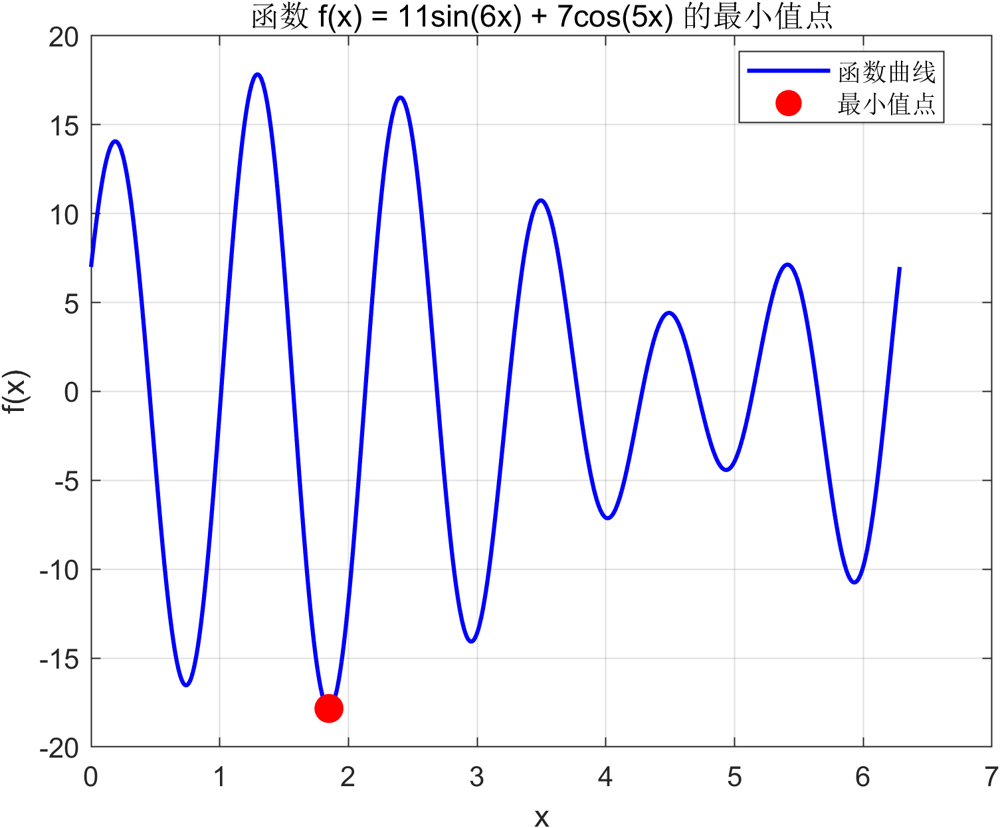
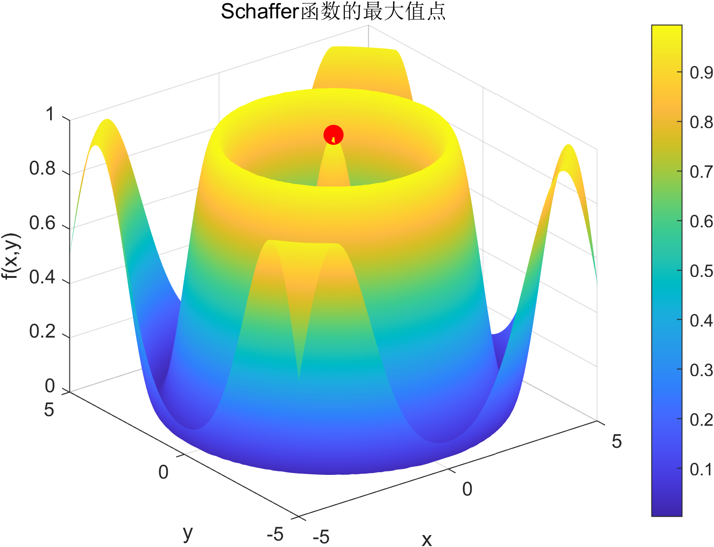

智能优化算法 MATLAB 实验汇报
遗传算法 · Schaffer 测试函数
研究背景
- 工程与科学问题中常见非线性、多峰优化问题
- 传统梯度法容易陷入局部最优
- 需要具有全局搜索能力的优化算法
遗传算法的提出
- 提出者：John Holland（1975）
- 灵感来源：自然界生物进化与自然选择
- 属于群体智能与进化计算方法
遗传算法的基本思想
- 将解编码为“个体”，组成初始种群
- 通过选择、交叉、变异产生新一代
- 适应度高的个体更容易被保留
问题一：一维函数最小值（GA）
- 步骤1：构建目标函数并限定搜索区间
- 步骤2：遗传算法进行全局搜索
- 步骤3：获得全局最小值点
$$ f(x)=11\sin(6x)+7\cos(5x),\quad x\in[0,2\pi] $$
fun = @(x) 11*sin(6*x)+7*cos(5*x);
[x,fval] = ga(fun,1,[],[],[],[],0,2*pi);

Schaffer 测试函数
- 经典多峰测试函数
- 具有大量局部极值
- 用于检验算法全局搜索能力
Schaffer 函数数学模型
$$ f(x,y)=0.5-\frac{\sin^2(\sqrt{x^2+y^2})-0.5}{(1+0.001(x^2+y^2))^2} $$
函数呈现出复杂波纹状曲面，局部极值密集
遗传算法求解 Schaffer 函数
- 步骤1：构建适应度函数（转为最小化）
- 步骤2：GA 在二维空间中全局搜索
- 步骤3：定位全局最大值
schaffer = @(x) -(0.5-(sin(sqrt(x(1)^2+x(2)^2))^2-0.5)
/(1+0.001*(x(1)^2+x(2)^2))^2);
[x,fval] = ga(schaffer,2,[],[],[],[],[-5,-5],[5,5]);

总结
- 遗传算法具有优秀的全局搜索能力
- 对多峰复杂函数表现稳定
- Schaffer 函数验证了算法有效性